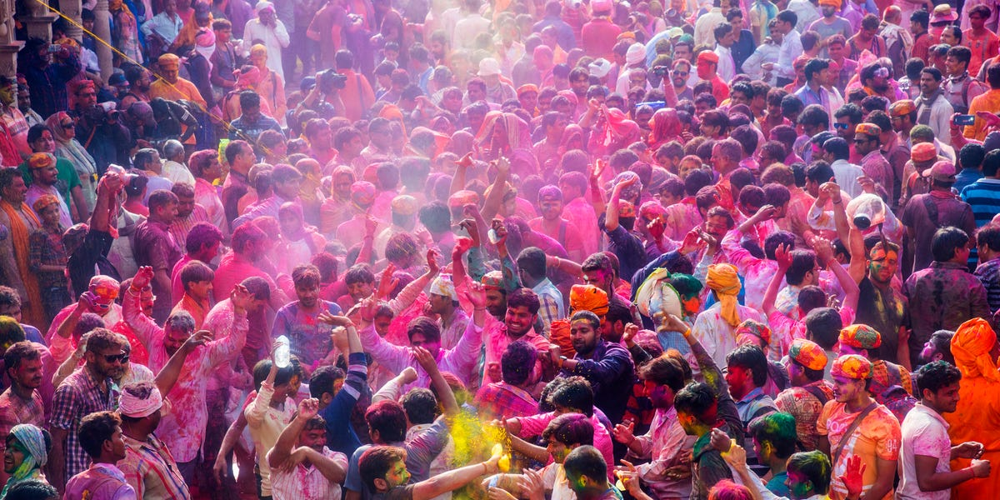
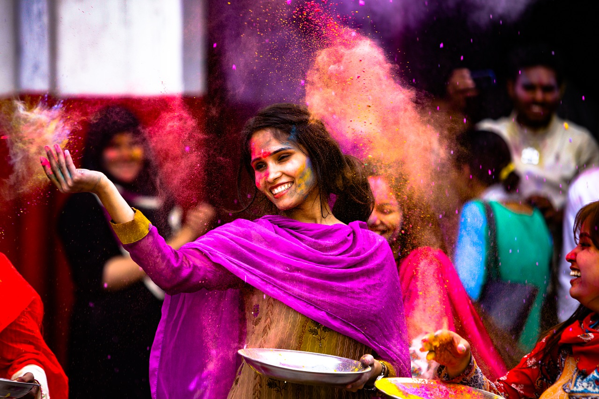

Holi is the festival of colors in Nepal celebrated in “Fagu Purnima”- the full moon day with great joy, especially in Terai. In this festival, people exchange different smear color powders with their friends and family members while exchanging greetings, harmony, happiness, and wishing them “Happy Holi”.Holi, also known as Festival of Colors, is one of the most popular festivals in Nepal. It takes place on the full moon day in Nepali Fagu month (February to March in Solar Calendar) and lasts for 2 days. This festival was held from March 20 to 21, 2019, and from March 9 to 10, 2020. Following Dashain and Tihar Festival, Holi is celebrated for the victory of good over evil and the coming of spring. During this colorful festival, Nepalese and foreign tourists will throw each other with dry powder and colored water to express their sincere blessings and good wishes.
The origin of Holi Festival can be traced back to the "Mahabharata", Indian famous epic. According to the legend, King Hiranyakashipu was so arrogant and didn't allow people to worship Lord Vishnu. However, Prince Prahlada was an ardent devotee of Vishnu and openly opposed his father. This enraged Hiranyakashipu. Since then, the king ordered his sister Holika to burn the prince on the full moon night. Under the blessing of God Vishnu, Prahlada was unscathed while Holika was burned into ashes. When the prince walked out of the fire, people sprinkled him with colorful water to express the praise of goodness and hatred of evil.
Different from India Holi rituals, Holi Festival in Nepal has a special ceremony for erecting a wood pole. On this day, Nepali women dress in beautiful Sari with auspicious things in hand, and then circle around the pole to pray for the blessings. Durbar Square and the surrounding streets turn into a sea of waters, colors and music. And you'll have the chance to see the most prestigious singers performing on the stage. On the eighth day, the festival comes to an end with Holi bonfire. Holy festival also signifies the end of the winter and the beginning of Spring. On this day, people gather in a park or yard and throw colors, water and balloons with colored water to the friends and relatives who gather for the celebration. Connecting it with religious and cultural myth, it is a celebration of colors on the occasion of the burning of the Holika. It is the symbolic burning of the negative forces the are prevailed within you. Holi festival has become a celebration that is an opportunity to meet up friends and relatives. It is a national holiday in Nepal and India. The tourist center- Thamel and its surroundings-Asan, Indrachok, Kathmandu Durbar Square type of places will be covered by the youths and those who enjoy this day.
